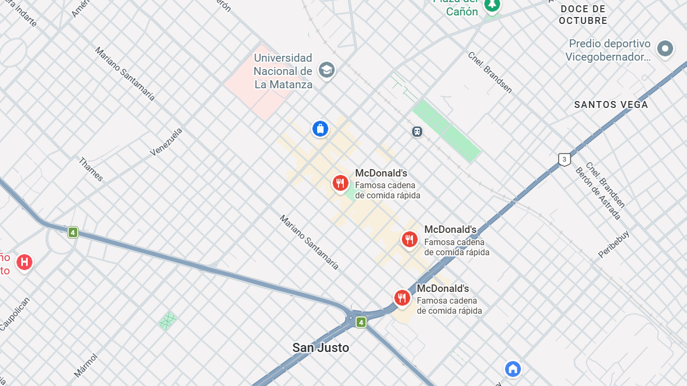

McDonald's se dedica principalmente a la operación y franquicia de restaurantes de comida rápida a nivel mundial. Su enfoque se centra en la venta de hamburguesas, papas fritas, menús de desayuno, bebidas y postres, con una red que atiende a millones de clientes diariamente en más de 100 países
Trabajé en Mcdonalds durante 2 años como cajero y atención al cliente. Aprendí a trabajar en equipo, a manejar situaciones de estrés y a brindar un excelente servicio al cliente.
